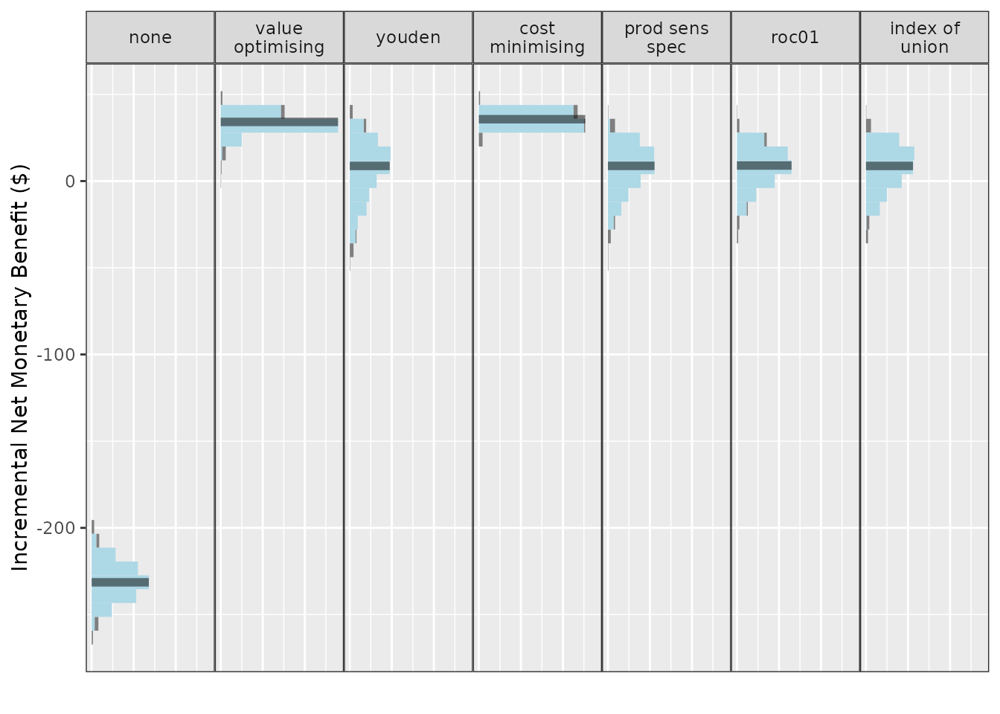
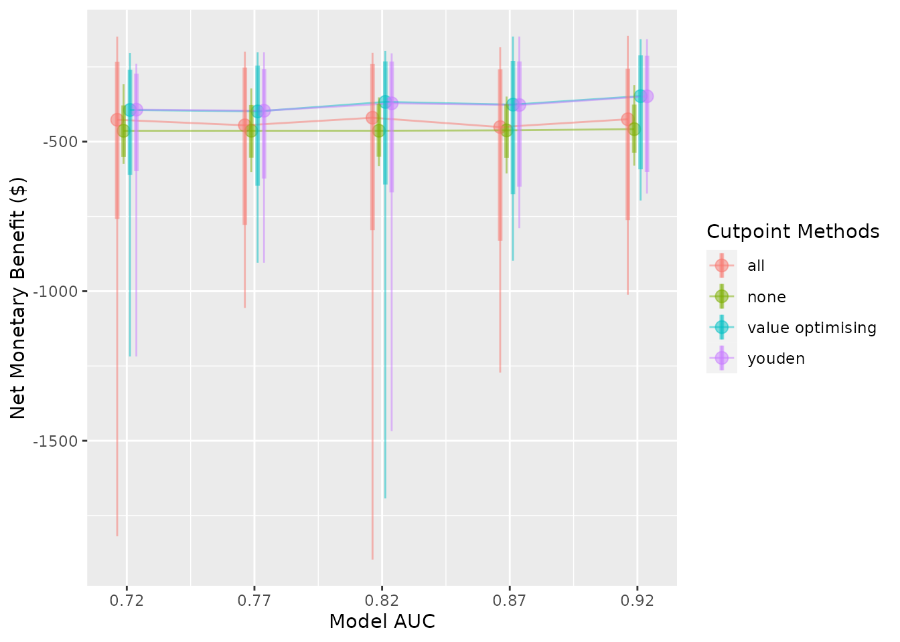
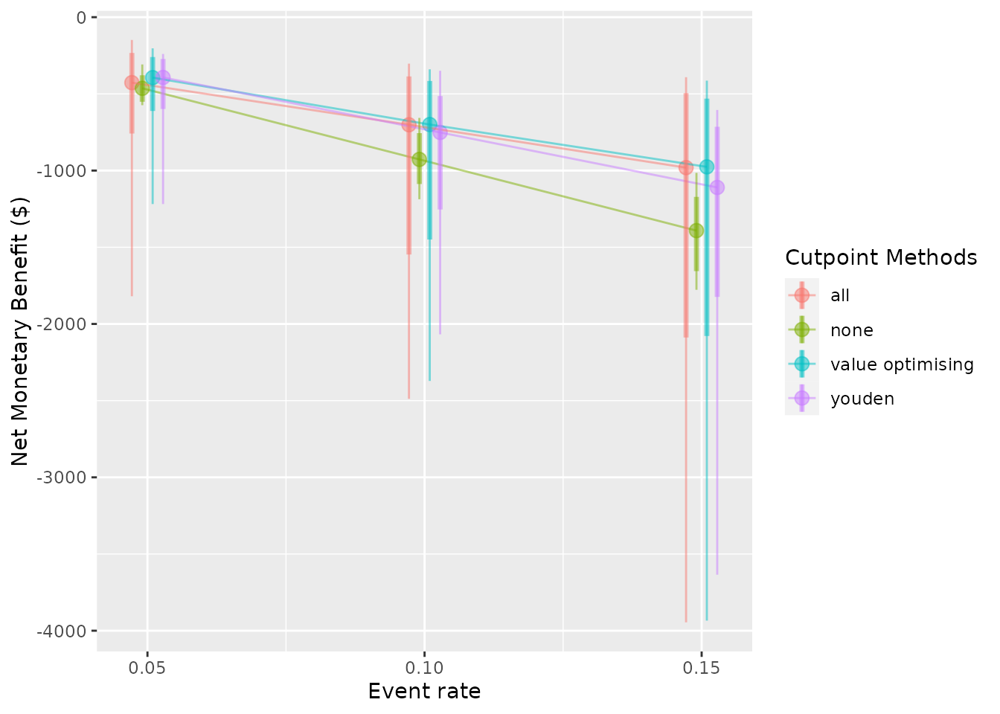

library(predictNMB)
library(parallel)Detailed example
Economic analysis typically combines information from a variety of sources, including randomised controlled trials, costing studies, and local data. An advantage of simulation is that it can estimate the utility of a proposed intervention prior to implementation.
In this example, we simulate the decision process for a hospital analyst at an Australian hospital with a high rate of pressure injuries, also known as pressure ulcers. Pressure ulcers are significant adverse events for patients, often leading to additional discomfort, prolonged length of hospital stay, and increased costs. The hospital currently has a pressure ulcer prevention program in place, but our analyst is examining whether to implement a clinical prediction model to identify patients who may not benefit from the program and potentially reduce costs.
Let’s begin by generating some realistic costs and probabilities. Keep in mind, we are trying to avoid a negative event, so the net monetary benefit of every strategy is going to be negative. In economic parlance, costs are typically negative, while cost savings are positive. If we were also interested in improving quality of life, we could estimate quality-adjusted life years (QALYs), multiply them by a willingness-to-pay threshold (WTP), and add this gain or loss to our true positive and false negative estimates to signify the impact on the patient. For simplicity, let’s say we’re only interested in hospital costs.
Model inputs:
- Mean incremental cost per pressure injury:
$8,000 (SD 550)
- Per-patient cost of pressure ulcer prevention
strategy (PUP): $140 (SD 20)
- Odds ratio of pressure ulcer with
intervention compared to non-intervention: 0.96 (SD 0.03)
- AUC:
0.820 (SD 0.02)
- Hypothetical hospital pressure injury
incidence/event rate: 0.1 (SD 0.02)
With these inputs, we can populate our confusion matrix (2x2 table), which helps us understand the outcomes resulting from correct and incorrect predictions.
Model inputs
First, we need to define our NMB function, which provides data for our simulation. In this case, the intervention is associated with a 4% reduction in the odds of a pressure ulcer, so it’s only moderately effective at reducing the chance of a pressure injury. We can use a probability-weighted cost saving for successful prevention, at 8000*(0.96) = a small improvement of around $320. After including $140 in program costs, the net benefit is around $180 for a successfully prevented pressure ulcer.
The AUC is 0.820, which is essentially the proportion of random positive patients that received a higher probability of an injury than random negative patients (and vice versa). A useful property of the AUC is that it is the same no matter what probability threshold we use. In our case, an AUC of 0.820 means that the model will assign higher probabilities of a pressure ulcer to around 82% of patients who go on to develop an ulcer compared to patients that don’t.
fx_nmb <- function() {
cost_of_pi <- 8000
eff_pup <- 0.96
cost_pup <- 140
c(
"TP" = -cost_of_pi * eff_pup - cost_pup, # True positive = Correctly predicted event savings - intervention cost
"FP" = -cost_pup, # False positive: Cost of (unnecessary) treatment from incorrectly predicted positive
"TN" = 0, # True negative: No cost of treatment or event from correctly predicted negative
"FN" = -cost_of_pi # False negative: Full cost of event from incorrectly predicted negative
)
}
fx_nmb()
#> TP FP TN FN
#> -7820 -140 0 -8000For a first pass, we want to see how our current values affect the estimated NMB from model implementation. We will just use our best guesses for now, but for a rigorous simulation, we will want to use Monte Carlo methods to sample from input distributions.
nmb_simulation <- do_nmb_sim(
sample_size = 1000, # Evaluating a theoretical cohort of 1,000 patients
n_sims = 500, # The larger the number of samples, the longer it takes to run, but the more reproducible the results
n_valid = 10000, # Number of times the NMB is evaluated under each cutpoint
sim_auc = 0.820, # The AUC of our proposed model
event_rate = 0.1, # The incidence of pressure ulcers at our hypothetical hospital
fx_nmb_training = fx_nmb, # As a first pass, we will just use our confusion matrix vector above for training and evaluation
fx_nmb_evaluation = fx_nmb
)
nmb_simulation
#> predictNMB object
#>
#> Training data sample size: 1000
#> Minimum number of events in training sample: 100
#> Evaluation data sample size: 10000
#> Number of simulations: 500
#> Simulated AUC: 0.82
#> Simulated event rate: 0.1
make_summary_table(nmb_simulation) # Get the median incremental NMB for each threshold selection method
#> # A tibble: 8 × 3
#> method median `95% CI`
#> <chr> <dbl> <chr>
#> 1 all -907. -956.8 to -863.8
#> 2 cost minimising -798. -848.8 to -752.6
#> 3 index of union -817. -865.5 to -772.1
#> 4 none -799. -850.8 to -754
#> 5 prod sens spec -817. -866.5 to -771.7
#> 6 roc01 -817. -865 to -771.7
#> 7 value optimising -798. -849.1 to -752.9
#> 8 youden -817. -865.1 to -771.7
plot(nmb_simulation, what = "cutpoints") # Demonstrates the range of selected cutpoints under each method
plot(nmb_simulation, what = "inb", inb_ref_col = "all") # Compares the incremental benefit of each alternate strategy to our current practice (treat all)
Our first pass shows treating all is a bad option, outperformed by
every other method (as the reference strategy, treat all has an NMB of
0). Treat none looks like a good choice; we should definitely consider
scrapping the program and look for something else that either costs less
or provides better results. However, this doesn’t tell the full story.
There may be some incremental benefit from using a model to select
patients depending on how our input values change, as the median for
value-optimising and cost-minimising strategies is higher than treating
none. So our intervention might be worth using, but only for the highest
risk patients. Results from the ROC-based methods like the Youden index
and index of union are quite uncertain, so we may not want to use them
for these input parameters. However, the utility of these models and the
threshold selection methods based on the ROC might improve as they get
more accurate, or as the event rate increases; what we really want to
know is how robust our results are to changes in the input parameters.
This is the purpose of screen_simulation_inputs(). We can
not only simulate from a distribution for our cost inputs, we can pass a
vector to the AUC and incidence arguments to understand how these impact
our findings.
First, let’s specify our sampler function for the confusion matrix. We can replace our inputs with normal distributions, as our values are all means. Make sure to pass distribution definitions within the function so that they are resampled every simulation, but pull the same value for the same patient.
fx_nmb_sampler <- function() {
cost_of_pi <- rnorm(n = 1, mean = 8000, sd = 550)
eff_pup <- rnorm(n = 1, mean = 0.04, sd = 0.03)
cost_pup <- rnorm(n = 1, mean = 140, sd = 20)
c(
"TP" = -cost_of_pi * (1 - eff_pup) - cost_pup,
"FP" = -cost_pup,
"TN" = 0,
"FN" = -cost_of_pi
)
}
fx_nmb_sampler()
#> TP FP TN FN
#> -8228.4573 -118.7212 0.0000 -8296.4700
fx_nmb_sampler()
#> TP FP TN FN
#> -6624.8772 -163.1996 0.0000 -7101.2519
fx_nmb_sampler()
#> TP FP TN FN
#> -6946.5446 -125.4442 0.0000 -7382.8386The sampler function shows that we can expect some significant variation, especially due to the probability that our intervention is effective. It’s always possible that an intervention could lead to worse patient outcomes. In our case, some true positives could actually be worse than false negatives!
We should also check whether changing the other inputs can lead to
different results. Perhaps the authors of the clinical prediction model
reported a misleading AUC and when we implement the model it turns out
to be lower, or perhaps our pressure ulcer rate in some wards is
actually quite different to the average incidence at the hospital. By
replacing our sim_auc and event_rate arguments
with vectors, we can run simulations for each possible combination we
are interested in.
In the snippet below, we will compare the treat all strategy to scrapping the program altogether (“none”) and to a couple of alternative strategies, using the “value_optimising” and “youden” thresholds.
We can also do this in parallel to speed things up.
cl <- makeCluster(2)
sim_pup_screen <- screen_simulation_inputs(
n_sims = 500,
n_valid = 10000,
sim_auc = seq(0.72, 0.92, 0.05),
event_rate = c(0.02, 0.1, 0.18),
cutpoint_methods = c("all", "none", "value_optimising", "youden"),
fx_nmb_training = fx_nmb,
fx_nmb_evaluation = fx_nmb_sampler,
cl = cl
)
stopCluster(cl)
make_summary_table(sim_pup_screen)
#> sim_auc event_rate all_median all_95% CI none_median
#> 1 0.72 0.02 -295.63 -346.4 to -240.7 -158.63
#> 2 0.72 0.10 -909.36 -1027 to -786.1 -798.77
#> 3 0.72 0.18 -1517.61 -1756.7 to -1340.9 -1440.69
#> 4 0.77 0.02 -291.04 -346.2 to -241.9 -159.19
#> 5 0.77 0.10 -911.07 -1037.5 to -778.9 -802.58
#> 6 0.77 0.18 -1515.35 -1751.3 to -1287.1 -1437.31
#> 7 0.82 0.02 -291.85 -343 to -242.7 -159.43
#> 8 0.82 0.10 -903.63 -1034.1 to -781.3 -798.95
#> 9 0.82 0.18 -1523.67 -1743.9 to -1315.1 -1436.96
#> 10 0.87 0.02 -293.34 -347.5 to -247 -159.29
#> 11 0.87 0.10 -906.48 -1030.2 to -783.1 -800.76
#> 12 0.87 0.18 -1523.02 -1739.6 to -1304.7 -1442.26
#> 13 0.92 0.02 -288.74 -336 to -247.6 -157.60
#> 14 0.92 0.10 -904.26 -1044.5 to -778.2 -803.12
#> 15 0.92 0.18 -1520.72 -1744.4 to -1319.1 -1439.67
#> none_95% CI value optimising_median value optimising_95% CI
#> 1 -193.5 to -130.1 -158.66 -193.5 to -130.2
#> 2 -912.2 to -691.2 -799.33 -920.7 to -693.3
#> 3 -1666.7 to -1256.6 -1437.61 -1664.1 to -1257.6
#> 4 -190.4 to -130.6 -159.34 -190.7 to -130.7
#> 5 -916 to -684.2 -802.82 -914.7 to -681.7
#> 6 -1647.1 to -1224.6 -1436.93 -1644.6 to -1220.9
#> 7 -192.4 to -126.9 -159.53 -192.4 to -126.9
#> 8 -913.2 to -686 -796.90 -912.1 to -683.7
#> 9 -1673.3 to -1254.1 -1433.73 -1660 to -1246.8
#> 10 -189.8 to -130.7 -159.50 -190.2 to -131.8
#> 11 -913.4 to -694.3 -795.68 -913.9 to -688.6
#> 12 -1629.1 to -1244.2 -1433.52 -1624.2 to -1228.6
#> 13 -192.4 to -127 -157.52 -192.9 to -127.6
#> 14 -914.2 to -680.8 -794.02 -914 to -667.6
#> 15 -1642.8 to -1242.9 -1424.49 -1635.4 to -1232.3
#> youden_median youden_95% CI
#> 1 -200.69 -260.6 to -154.8
#> 2 -828.90 -946.8 to -710.9
#> 3 -1454.62 -1692.9 to -1275.4
#> 4 -194.16 -251 to -153.7
#> 5 -827.58 -944.2 to -703.5
#> 6 -1447.99 -1663.7 to -1221.6
#> 7 -187.23 -246.2 to -144
#> 8 -816.23 -939.2 to -696.5
#> 9 -1446.54 -1666.8 to -1244.6
#> 10 -180.23 -236.2 to -143.8
#> 11 -809.19 -926.8 to -699.6
#> 12 -1439.96 -1640.6 to -1229.4
#> 13 -172.40 -219.1 to -138.7
#> 14 -803.43 -932.6 to -679.8
#> 15 -1428.93 -1642.2 to -1233.6As our event rate increases, treatment decisions based on the model, like the Youden index, begin to look better, but there are still very marginal gains from using the prediction model regardless of threshold. It might be that the program could be beneficial mostly in settings where patients are at a very high risk. If the event rates 0.02, 0.10 and 0.18 corresponded to different wards of the hospital, our simulation could represent the estimated effectiveness of different strategies in each setting.
We can also represent these results visually.
plot(sim_pup_screen, x_axis_var = "sim_auc", constants = c(event_rate = 0.02))
#>
#>
#> Varying simulation inputs, other than sim_auc, are being held constant:
#> event_rate: 0.02
plot(sim_pup_screen, x_axis_var = "sim_auc", constants = c(event_rate = 0.10))
#>
#>
#> Varying simulation inputs, other than sim_auc, are being held constant:
#> event_rate: 0.1
plot(sim_pup_screen, x_axis_var = "sim_auc", constants = c(event_rate = 0.18))
#>
#>
#> Varying simulation inputs, other than sim_auc, are being held constant:
#> event_rate: 0.18
plot(sim_pup_screen, x_axis_var = "event_rate")
#>
#>
#> Varying simulation inputs, other than event_rate, are being held constant:
#> sim_auc: 0.72
The nice thing about our cost-effectiveness function is that it tends to follow the best threshold, regardless of AUC or event rate. In this case, it tends to follow the treat none decision as it moves across, which is why the strategies for treat none and cost-effective overlap in the plots. We can also see that the Youden index begins to look better at higher accuracy and higher incidence rates, but predicting what patients will get a pressure ulcer is challenging.
Ultimately at our given AUC and event rate, it might be best to stop using the intervention for the time being across all patients. This is actually the finding in the analysis this vignette was based off, a cost-effectiveness analysis of a pressure ulcer prevention care bundle by Whitty et al in 2017 (10.1016/j.ijnurstu.2017.06.014).